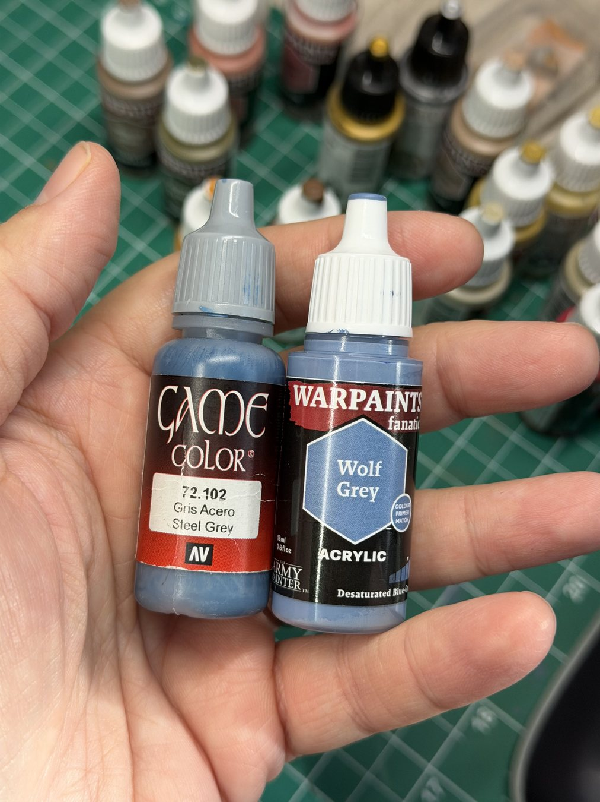
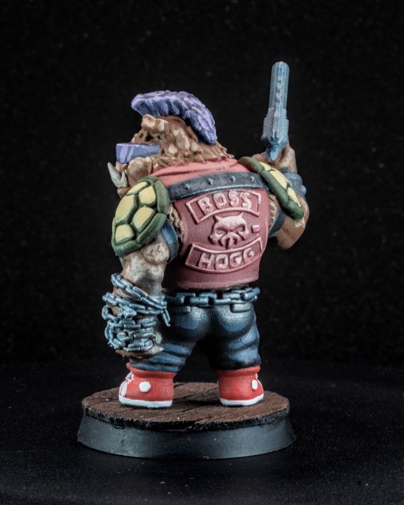

Bebop is a mutant warthog punk rocker covered in metal: studs, chains, armor plates, a mohawk's worth of attitude. He was the mini where I figured out how to drybrush metallics so they look like worn steel instead of a fine layer of silver glitter over everything.
Why this matters
Metallic paint behaves differently from regular paint. The pigment is full of tiny reflective flakes (mica), so if you drybrush it the normal way, those flakes land everywhere, including recesses and neighboring areas, and the whole mini looks dusted. Done carefully, though, drybrushed metal is one of the fastest ways to get convincing, battle-worn armor.
The short version
Use a bigger soft brush, load it with metallic, then wipe off almost all of it before touching the mini. Use short, light dusting strokes so only the raised edges catch the metal. Paint a blue-grey underneath first for depth. Save metallics for late in the process, and keep metallic flakes away from your other brushes, water and palette.
The workflow
- Basecoat the metal areas in blue-grey. A blue-grey underlayer gives steel more depth than painting metal straight over black. My two favorites are Vallejo Game Color Steel Grey (72.102) and Army Painter Warpaints Fanatic Wolf Grey.
- Finish the non-metal areas first. Skin, cloth, leather, base. If you're going to matte varnish, do it now, before the metallics. Matte varnish dulls metallic shine, so metallics go on after.
- Load a larger soft brush with metallic. Don't use your good detail brush. A cheap, soft, slightly larger brush works best.
- Wipe off almost everything. Keep going on the paper towel until the brush looks nearly dry. That "nearly" is the whole technique.
- Dust the raised edges. Short, light, quick strokes across the edges. Build it up in passes rather than one heavy pass.
- Add a brighter pass on the very top edges. A second, lighter metallic (or the same one, even drier) on the corners and rivets that would catch the most light.
- Optional: a wash to dirty it back down. Brown or black wash in the recesses if it looks too clean.
On Bebop I used Vallejo Gunmetal and Rough Iron over the blue-grey. I honestly don't remember which went where. The exact bottles matter much less than the idea: dark and cool underneath, metal only where light would actually hit.


The two contamination rules
- Separate rinse water. Metallic flakes float in your water and end up in every color you rinse afterward. Use a second cup for metallics, or at least change the water afterward.
- Keep metallic off the palette and brushes you use for clean colors. A tiny bit of mica in a white highlight is surprisingly obvious.
When to use something else
- Big smooth surfaces (a car hood, a shield face) usually look better with a layered or blended metallic than a drybrush.
- Non-metallic metal (NMM) is painting metal with regular paints. It's a whole different skill and looks great in photos, but it's much slower, and my hot take is that real metallics look better on the table anyway (more on that).
- Specialty metallics, like the color-shifting Turbo Dork paints I tried on Mysterio's helmet, are trickier to work with than regular metallics. Worth it for a character like Mysterio, but not the place to learn drybrushing.
Checklist
- Blue-grey (or dark) basecoat on the metal
- Everything else finished and varnished first
- Big soft cheap brush
- Wipe until nearly dry
- Short light strokes, several passes
- Separate water cup
Next: use the same restraint on glow effects in beginner OSL.